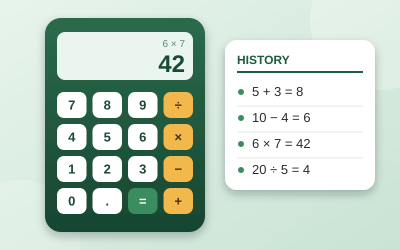
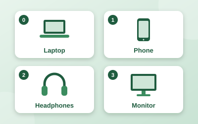
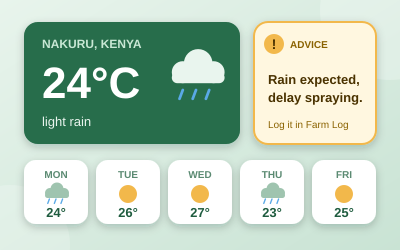
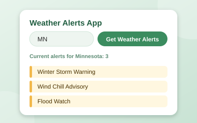

JavaScript Calculator

Adds, subtracts, multiplies and divides two numbers. It keeps a history of every calculation and can display it.
Junior Web Developer
My GitHub ProfileI am a junior developer who builds small web pages and programs. I like turning plain ideas into something that works.

Adds, subtracts, multiplies and divides two numbers. It keeps a history of every calculation and can display it.

Uses a JavaScript array to add, rename and remove products in a store inventory.

A single-page app that helps farmers plan field work around the weather. Pick or search a town to see current conditions, a 5-day forecast and simple advice, and keep a farm log of crops and activities. Built with HTML, CSS, JavaScript and Bootstrap, using the OpenWeatherMap API.
View on GitHub
Type a US state abbreviation and fetch its current weather alerts from the National Weather Service API. It shows how many alerts are active and each headline, and handles bad input and network errors.
View on GitHub